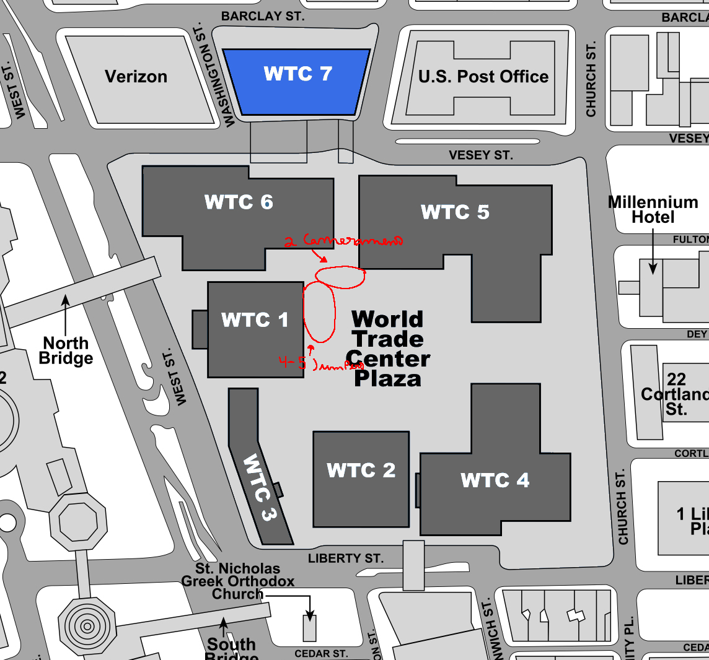

You can see blood on the floor in the video, but you can't see people properly
Jumper impact
I don't know if LOL Superman exists but there are people who have seen the LOL Superman video that I think was shot in the North or the South
And there is also a post on 4chan where the guy says that he saw this video when he was 8 or 9 years old, he saw a video called “lol Superman” that was recorded on September 11 where people were throwing themselves and falling to the ground
Some of the impact was so great that people turned to red smoke or pieces of human flesh. On the street it was also possible to see human flesh on the floor, others it was possible to see legs or hands on the floor
We don't know the author of the video, the name of the camera, we just know that it was recorded in that part here
And also one we have a fake photo of LOL Superman that they took from a video that has nothing to do with LOL Superman. The video was before or after the event and then they discovered that the photo was fake
There are also a lot of fake LOL Superman audios so if you see an “audio” of LOL Superman don't believe it's fake
The video was posted on YouTube between 2006-2007 and no one knows the date it was posted or the month it was posted and no one knows the name of the channel where LOL Superman posted. And nobody saved or downloaded the video so LOL Superman's status is “unconfirmed existence”
Some videos also show that people threw themselves from the twin towers and fell to the ground, cars etc., But. Those videos were removed or is it a part of the video lol superman but lol superman didn't seem to be a compilation of people playing each other and the video was known as "Shock Video" or as they say "lol superman"
Nowadays the video is lost and still not found because the video is very difficult to find and not even the Wayback Machine was able to archive the video or the channel created. But if you go to the Wayback Machine and go to YouTube and search for “lol Superman” you won't find anything
But someday or year will this video be found
That video must have been with the FBI and they must have saved the video.
But there is this site that has videos or photos of Lol Superman but you don't stop to see the videos so without success
Vídeo link: https://web.archive.org/web /20090205062729/http://www.penttbom.com/
And there's this image that shows where the jumpers fell and the cameramen
This image shows where the Jumpers fell and shows the cameramen as well. The image shows 2 cameramen recording people playing each other and 4-5 Jumpers playing each other is tower 1. We also have a video from WABC-TV
This video shows this part here
And we can also see in the background of the video two men going up the escalators, or normal stairs. When you went up the stairs it was in that part
The last image shows where the Jumpers were falling and the cameramen recording what was happening. And we have a YouTube recording that shows the World Trade Center Praza, but it doesn't show the people on the floor or the cameramen.